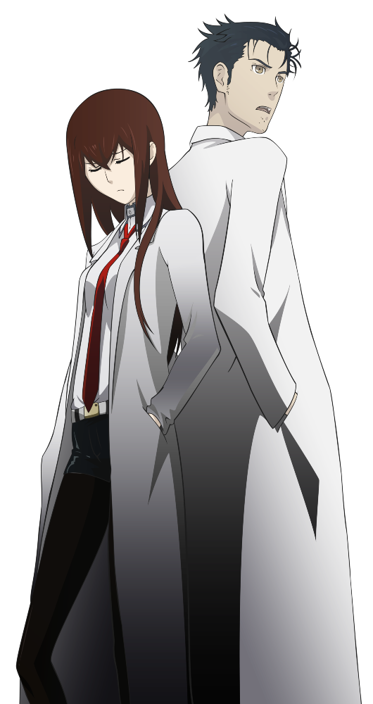

História
Steins;Gate conta a história de Rintaro Okabe (ou Hououin Kyouma, como ele prefere ser chamado), um jovem cientista maluco que desenvolve vários experimentos em seu apartamento ao lado de sua amiga de infância, Mayuri Shiina e do superhacker, Itaru Hashida. Dentre suas principais invenções está o Mobile Microwave, um micro-ondas que pode ser controlado à distância através de um celular. Os problemas de Okabe começam quando, durante uma palestra na Rádio Kaikan, ele encontra o corpo de Kurisu Makise, a garota gênio, todo ensanguentado jogado em uma sala. As coisas se complicam ainda mais quando, algum tempo depois, o cientista maluco reencontra a garota agindo como se nada tivesse acontecido.
